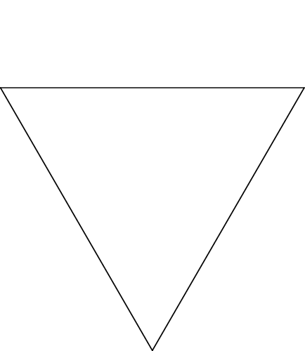

The Koch Curve and Snowflake
Starting with a segment, delete the middle third and replace with the two remaining sides of an equilateral triangle. Now repeat with each of the four segments in the new picture...
